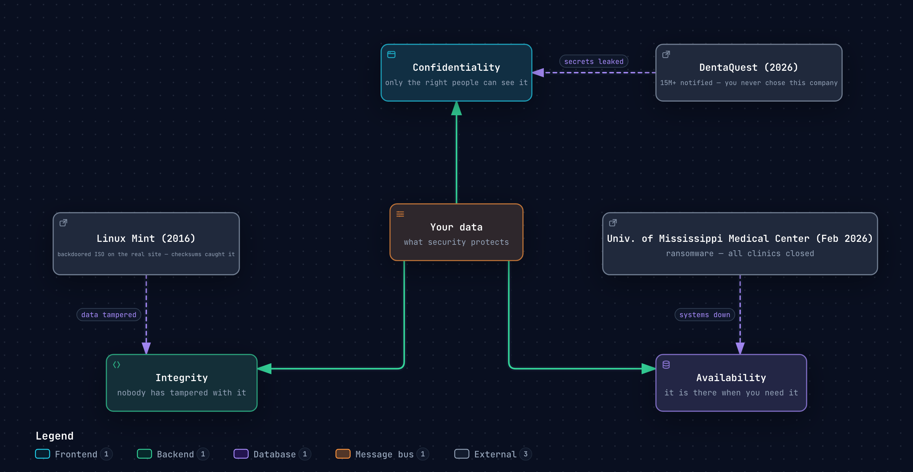
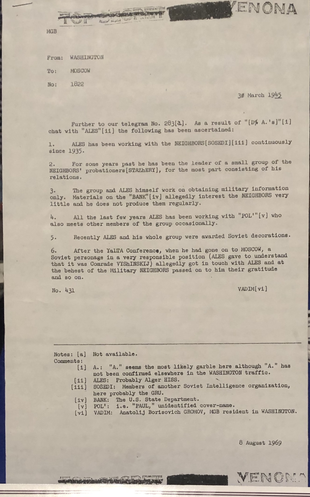
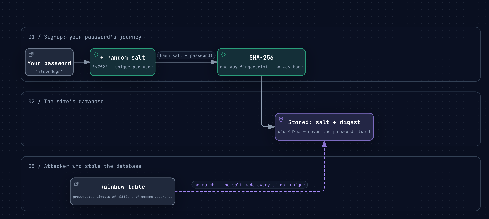
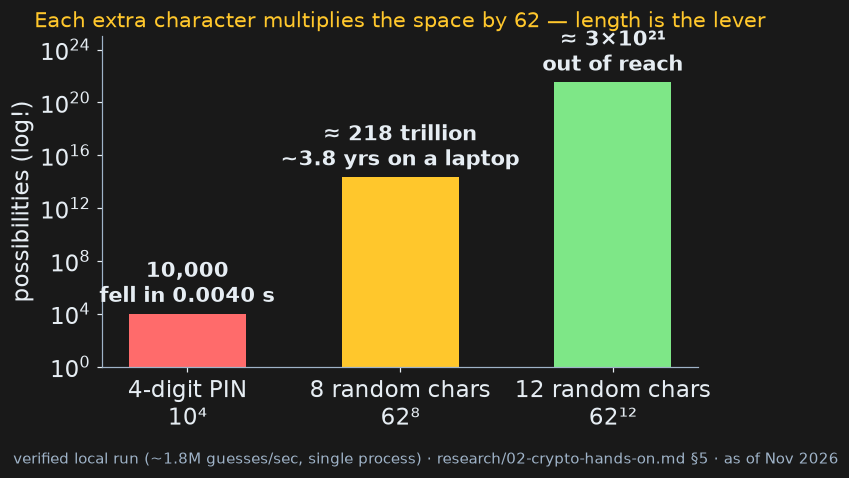
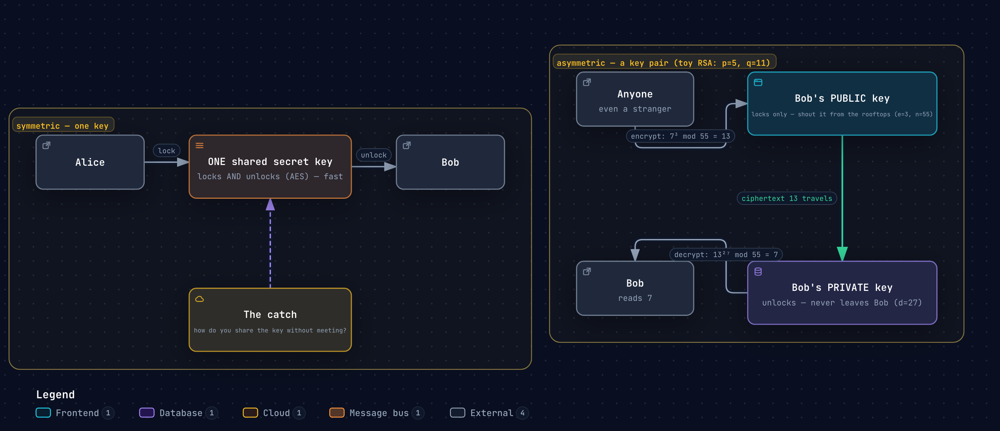
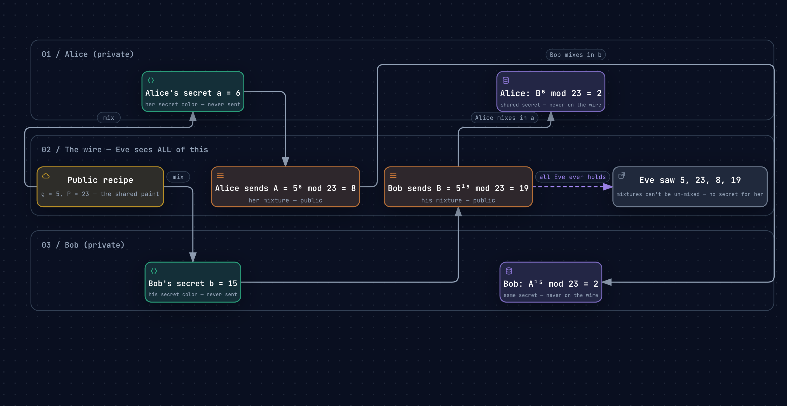
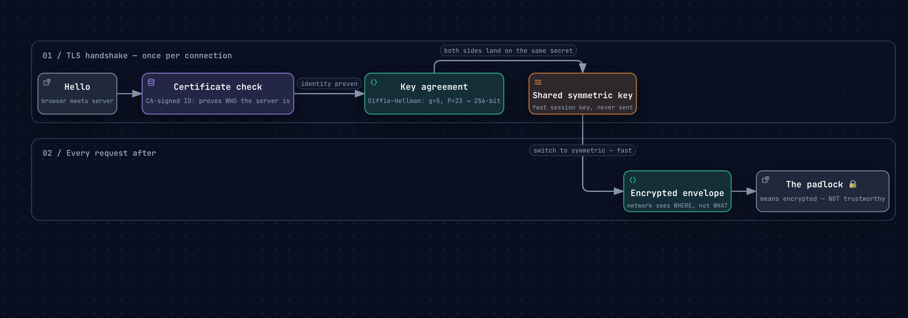
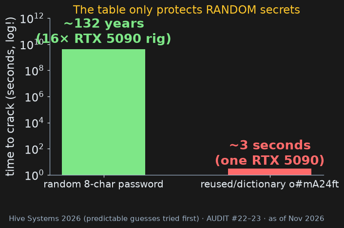
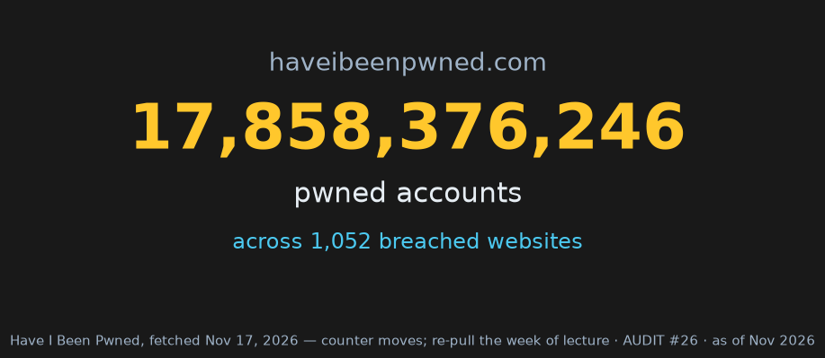
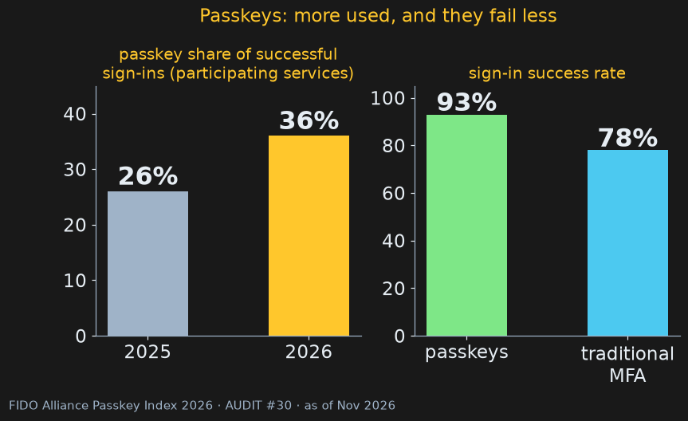

Part 1 · Secrets — how to think about risk, and how encryption actually works
COMP 150-003 · Fall 2026 · Prof. Allan Miller
The day the Knicks won
Jun 5, 2026
The Knicks win their first NBA championship in 53 years. The intrusion at Madison Square Garden Sports — the company that runs the Knicks — happened the same day.
The way in
Reportedly a phone call: voice phishing ("vishing") of an employee. No zero-day, no movie hacking — a conversation.
Ten days later, the extortion deadline passed and the attackers (ShinyHunters) published a data dump.
💬 Why attack on the biggest day in 53 years? What is everyone at MSG looking at that day?
DataBreachToday breach roundup · SpyCloud 2026 breach blog ("reportedly" = their sourcing) · as of Nov 2026
26 million records? Says who?
26,000,000+
records — claimed by the attackers (as of Nov 2026)
That number comes from ShinyHunters — the people selling the data. Attacker numbers are advertising.
Confirmed facts arrive slower, smaller, and in lawyer-speak. As of Nov 2026 there is no comparable confirmed count.
This module's running lesson: every number wears a label — claimed, confirmed, or estimated. Watch the labels.
Part 2 preview: the attackers who hit your own LMS (Canvas) claimed 275M "individuals" — never confirmed.
DataBreachToday (claimed count) · SpyCloud 2026 (Canvas claim, "hasn't been confirmed by Instructure or any independent source")
Everything you built in Modules 1–5 is an attack surface: bits get stolen (M1), programs get exploited (M2), AI writes the phish (M4), networks deliver it (M5).
And everything is also a defense: today your Module 3 XOR gate becomes a cipher, and Module 5's TLS handshake becomes something you compute by hand.
Part 1 (today): secrets — risk thinking, then how encryption actually works. Part 2: attackers — and your defense playbook.
Thinking like a defender
Three ways to lose: the CIA triad

Security is protecting all three. Every breach story in this module breaks at least one — and the exam asks you to say which.
Confidentiality: "you never chose this company"
May 2026: attackers (ShinyHunters-claimed) pulled dental-benefits records from DentaQuest — a benefits administrator most of its victims had never heard of.
More than 15 million people notified (possibly more, per an independent researcher's estimate).
You never signed up there, never set a password there. Your dentist's benefits processor held your records.
Moral: confidentiality often depends on someone else's security — Part 2 closes with who has to own that.
💬 Name three companies that hold data about you that you never chose.
Iowa AG notification letter (Jul 16, 2026) · HIPAA Journal · as of Nov 2026
Integrity and availability
Integrity · Linux Mint, 2016
Hackers served a backdoored copy of the Linux Mint installer from the project's own hacked website (Feb 20, 2016). The download looked identical. The only tell: its checksum — a digital fingerprint — didn't match the published value. (A 2016 story; the MD5 fingerprint it relied on is itself retired now.)
Availability · UMMC, Feb 2026
A ransomware attack forced the University of Mississippi Medical Center to close all of its roughly three dozen clinics. The Medusa gang later claimed responsibility. Nobody had to read a single record — care simply stopped.
That "checksum" is a hash — in ~20 minutes you'll compute them yourself in three lines of Python.
blog.linuxmint.com (Feb 20, 2016) · AP (Feb 20, 2026) · The Record
Your security plan: six questions (EFF)
1 · What do I want to protect?
2 · Who do I want to protect it from?
3 · How bad are the consequences if I fail?
4 · How likely is it that I'll need to protect it?
5 · How much trouble am I willing to go through?
6 · Who are my allies? (the newest question — campus IT, your bank's fraud line, each other)
This is threat modeling — EFF calls it "security planning." A journalist, a CEO, and you give different answers and need different defenses. No formula, just judgment.
An ex guessing your password · a phishing text · a stolen laptop · a reused password surfacing in a breach dump. Defenses genuinely work: long random passwords, MFA, encryption, backups.
Mossad problems
A nation-state intelligence agency targeting you, personally. Mickens: "YOU'RE STILL GONNA BE MOSSAD'ED UPON." Almost nobody in this room has this problem.
James Mickens, "This World of Ours" (USENIX ;login:, Jan 2014). The point is not despair — it's proportionality: pick defenses for your actual adversary, not the scariest one you can imagine.
The old textbook formula multiplies numbers nobody can measure. Neither EFF nor NIST teaches it.
The grown-up version is questions 3 and 4: how bad × how likely — judged honestly, per asset.
Your Instagram: phishing is likely and takeover is bad → worth real defenses (strong password + MFA). A spy agency reading your group chat: vanishingly unlikely → don't plan your life around it.
💬 Pick one thing you own — an account, a device, a folder. Run the six questions on it. 60 seconds.
EFF security-plan framing; the multiplication formula appears in neither EFF nor NIST CSF 2.0
How encryption actually works
The first cipher: shift the alphabet
def caesar(text, shift):
out = ""
for ch in text:
if ch.isalpha():
base = ord('A') if ch.isupper() else ord('a')
out += chr((ord(ch) - base + shift) % 26 + base)
else:
out += ch
return out
msg = "MEET AT NOON"
enc = caesar(msg, 3)
print(f"encrypted: {enc}")
print(f"decrypted: {caesar(enc, -3)}")
encrypted: PHHW DW QRRQ
decrypted: MEET AT NOON
Julius Caesar — this was his actual military cipher
Shift 3: A→D, B→E… Decryption is the inverse shift. The key is the shift amount — and there are only 25 of them.
research/02-crypto-hands-on.md §1 — run locally Nov 17, 2026 · Photo: Ángel M. Felicísimo from Mérida, España, Public domain, Wikimedia Commons
Now play attacker: try all 26 keys
secret = "ESP PILX TD PLDJ"
for s in range(26):
print(f"shift {s:2}: {caesar(secret, -s)}")
shift 0: ESP PILX TD PLDJ
shift 1: DRO OHKW SC OKCI
...
shift 10: UIF FYBN JT FBTZ
shift 11: THE EXAM IS EASY ← the only English row
shift 12: SGD DWZL HR DZRX
...
You don't need the key when you can afford to try every key. 25 keys ≈ no lock — security lives in the size of the key space.
Exercise 1
Intercepted: WKH FDNH LV D OLH — a Caesar cipher, shift 3. Decode it, by hand or with the function. (Which direction do you shift?)
⏱ 2 minutes
research/02-crypto-hands-on.md §1 — run locally Nov 17, 2026 (output truncated to fit)
Exercise 1: solution
secret = "WKH FDNH LV D OLH"
for s in range(26):
print(f"shift {s:2}: {caesar(secret, -s)}")
shift 0: WKH FDNH LV D OLH
shift 1: VJG ECMG KU C NKG
shift 2: UIF DBLF JT B MJF
shift 3: THE CAKE IS A LIE ← readable at shift 3
shift 4: SGD BZJD HR Z KHD
...
Knowing the shift: decode = shift back → caesar(secret, -3).
Not knowing it: at worst 25 tries. That's the moral — a cipher whose whole key space fits on one screen isn't a cipher.
run locally Nov 17, 2026 (output truncated to fit)
XOR: the gate you built is a cipher
Module 3: you built XOR from transistors. It encrypts.
key = 42
plain = "HI"
enc_bytes = [ord(c) ^ key for c in plain]
print(f"plain bytes: {[ord(c) for c in plain]}")
print(f"encrypted: {enc_bytes}")
dec = "".join(chr(b ^ key) for b in enc_bytes)
print(f"decrypted: {dec}")
print(f"42 ^ 42 = {42 ^ 42} (XOR self-inverse)")
Encrypt and decrypt are the same operation: (m ^ k) ^ k == m. One gate, both directions — and it's the heart of real stream ciphers.
research/02-crypto-hands-on.md §2 — run locally Nov 17, 2026
Key reuse broke the Soviets
Use the same key on two messages and c1 ^ c2 == m1 ^ m2 — the key cancels out, leaving the two plaintexts XORed together. A patient analyst teases them apart.
VENONA: US cryptanalysts read Soviet one-time-pad traffic for years — because pad pages were reused.
A one-time pad is perfectly secure only if the key is truly used once. Real ciphers (AES) exist because key management is the hard part.
Exercise 2
You intercept the byte list [98, 99] and learn the key is 42. What was the message? (Hint: decryption is the same operation.)
⏱ 2 minutes

A declassified VENONA decrypt worksheet
research/02-crypto-hands-on.md §2 · Photo: ArnoldReinhold, CC BY-SA 4.0, Wikimedia Commons
Exercise 2: solution — one character in binary
XOR with the key again: 98 ^ 42 = 72 = "H", and 99 ^ 42 = 73 = "I" → the message was "HI".
Watch one character in binary — XOR flips exactly the key's 1-bits, and flipping twice restores them:
That's the self-inverse property doing the work: encrypting ciphertext with the same key is decryption. (It's the exact output of the slide-before-last: [98, 99] was "HI" encrypted with 42.)
verified locally Nov 17, 2026
Hashing: a fingerprint for data
import hashlib
for m in ["hello", "hello!", "Hello"]:
print(f"sha256('{m}') = {hashlib.sha256(m.encode()).hexdigest()}")
print(f"md5('hello') = {hashlib.md5(b'hello').hexdigest()}")
Adding one ! changed every character of the digest — the avalanche effect.
One-way: no way back from fingerprint to input. Fixed length, any input. This is Linux Mint's checksum, made concrete.
MD5 is history: broken since 2004, still seen in the wild. SHA-256 is today's default.
Websites store the fingerprint, not your password — a stolen hash database matters, but isn't instant game-over.
research/02-crypto-hands-on.md §3 — run locally Nov 17, 2026
Exercise 3
Exercise 3
Predict before we run it: will sha256('comp150') and sha256('COMP150') look (a) mostly the same, (b) a little different, or (c) completely unrelated? Write your guess down — then we compute both.
⏱ 2 minutes
Reasoning counts more than the letter: why do you expect what you expect?
Exercise 3: solution
for m in ["comp150", "COMP150"]:
print(f"sha256('{m}') = {hashlib.sha256(m.encode()).hexdigest()}")
(c) Completely unrelated — compare them column by column: nothing lines up.
That's avalanche working as designed: if similar inputs gave similar fingerprints, an attacker could "home in" one character at a time. Unrelated outputs are the whole point.
run locally Nov 17, 2026
Salt: same password, different fingerprints
pw = "ilovedogs"
for salt in ["x7f2", "q9z1"]:
print(f"sha256('{salt}' + '{pw}') = {hashlib.sha256((salt+pw).encode()).hexdigest()}")
print(f"sha256(unsalted '{pw}') = {hashlib.sha256(pw.encode()).hexdigest()}")
A salt = a random per-user string mixed in before hashing. Two users, same bad password → two unrelated digests.
The unsalted digest is the dangerous one: identical for everyone who picked ilovedogs, and precomputed lookup ("rainbow") tables find it instantly.
research/02-crypto-hands-on.md §4 — run locally Nov 17, 2026
The whole pipeline: how a site stores your password

The site stores salt + digest, never the password. A stolen database still forces the attacker to guess — and the salt makes every precomputed table useless. Real sites add one more trick: a deliberately slow hash (bcrypt) — it stars in the password section in a few minutes.
How fast does a toy secret fall?
We made up a 4-digit PIN, took its SHA-256 fingerprint, and let a simple Python loop guess 0000–9999 against it — a toy stand-in for what "offline guessing" means once fingerprints leak:
found PIN 7291 in 0.0040 seconds (7292 guesses)
rate ~ 1,802,961 guesses/sec
8-char alnum space: 62**8 = 218,340,105,584,896
at that rate: 3.8 years
10,000 possibilities fell in 4 milliseconds — on my laptop, single process, naive loop.
Offline = no lockouts, no alerts: the guessing happens against the stolen fingerprint, on the attacker's hardware.
An 8-character random mixed-case+digits secret: 62⁸ ≈ 218 trillion possibilities ≈ 3.8 years at my laptop's rate.
research/02-crypto-hands-on.md §5 — verified local run, on my laptop; rate is machine-dependent (re-time in Colab)
Length is the lever

The honest turn: real cracking rigs (racks of rented GPUs) are vastly faster than my laptop — and a reused or dictionary password falls in seconds regardless of length. The math only protects random secrets.
research/02-crypto-hands-on.md §5 · chart: verified local run · as of Nov 2026
Exercise 4
Exercise 4
Your bike lock has 4 dials of 10 digits. Your friend's has 5 dials.
One extra dial = 10× the attacker's work — each dial multiplies the space by 10.
Passwords are bike locks with 62-position dials: each added random character multiplies the space by 62. 12 random characters ≈ 3 × 10²¹ — out of reach of any rig.
Grow length, not cleverness. (And remember the fine print: only for random secrets.)
One key, or two?
Everything so far — Caesar, XOR, Enigma, modern AES — is symmetric: the same key locks and unlocks.
The catch: both sides must already share the key. Enigma needed sheets of daily keys distributed to every operator — steal the sheet, read the traffic.
The 1970s revolution — asymmetric crypto: one key locks (public, shout it from the rooftops), a different key unlocks (private, never leaves you).
No shared secret needed before you start. That's what makes strangers-on-the-internet commerce possible.
Enigma: strong machine, fragile key distribution
Photo: Przemek P, CC BY-SA 3.0, Wikimedia Commons
Symmetric vs. asymmetric

Symmetric: fast, but the key must travel. Asymmetric: nothing secret travels — anyone can lock, only the private key unlocks. Real systems (HTTPS, coming up) use both.
RSA with tiny numbers
p, q = 5, 11
n = p*q; phi = (p-1)*(q-1); e = 3
d = pow(e, -1, phi)
print(f"n={n}, phi={phi}, e={e}, d={d}")
m = 7
c = pow(m, e, n)
print(f"encrypt: 7^{e} mod {n} = {c}")
print(f"decrypt: {c}^{d} mod {n} = {pow(c, d, n)}")
n=55, phi=40, e=3, d=27
encrypt: 7^3 mod 55 = 13
decrypt: 13^27 mod 55 = 7
Multiplying two primes is easy; un-multiplying (factoring) is hard — that asymmetry is the lock. Public key (e=3, n=55) encrypts 7 → 13; private key d=27 brings 13 → 7. Anyone can factor 55 — nobody can factor a real 617-digit n.
Exercise 5
Same keys. Encrypt m = 2. (Compute 2³ mod 55 — that's the whole job.)
⏱ 2 minutes
research/02-crypto-hands-on.md §6 — run locally Nov 17, 2026 (textbook toy primes; real keys are 2048-bit)
Exercise 5: solution
c = pow(2, 3, 55)
print(f"encrypt: 2^3 mod 55 = {c}")
print(f"decrypt: {c}^27 mod 55 = {pow(c, 27, 55)}")
encrypt: 2^3 mod 55 = 8
decrypt: 8^27 mod 55 = 2
2³ = 8, and 8 mod 55 is just 8 — no computer needed for the encryption.
The round trip back is the magic: the private exponent 27 exactly undoes the public exponent 3, because of how d was computed from the two primes.
run locally Nov 17, 2026
Agreeing on a secret in public

Paint version: both start from the same public yellow; each stirs in a private color; they swap the mixtures in the open; each stirs their private color into what arrived. Same final color on both sides — and the eavesdropper only ever saw mixtures. Mixing order doesn't matter; un-mixing is hopeless.
The same trick in numbers
g, P = 5, 23
a, b = 6, 15 # Alice's and Bob's private numbers
A = pow(g, a, P); B = pow(g, b, P)
print(f"Alice sends A = 5^6 mod 23 = {A}")
print(f"Bob sends B = 5^15 mod 23 = {B}")
print(f"Alice computes B^a mod 23 = {pow(B, a, P)}")
print(f"Bob computes A^b mod 23 = {pow(A, b, P)}")
Alice sends A = 5^6 mod 23 = 8
Bob sends B = 5^15 mod 23 = 19
Alice computes B^a mod 23 = 2
Bob computes A^b mod 23 = 2
Everything on the wire — 5, 23, 8, 19 — is public. Both sides still land on the shared secret 2. Your laptop runs this with 256-bit numbers every time you open a padlocked website.
Exercise 6
Eve recorded everything on the wire: 5, 23, 8, and 19. Why can't she compute the secret? (Answer with the paint version if you like.)
⏱ 2 minutes
research/02-crypto-hands-on.md §7 — run locally Nov 17, 2026
Exercise 6: solution
Eve holds two mixtures, each missing one secret ingredient — and un-mixing is the hard direction.
In numbers: she'd have to undo pow(5, a, 23) to recover the private a. Trivial for 23; effectively impossible for 256-bit primes — the discrete logarithm problem.
Alice and Bob aren't smarter — they're asymmetric: each holds a private number plus the other's mixture. Eve has mixtures only.
Same shape as RSA's trick: an operation that's cheap one way (mix, multiply) and hopeless the other (un-mix, factor).
Real encryption in three lines: Fernet
from cryptography.fernet import Fernet
k = Fernet.generate_key()
f = Fernet(k)
tok = f.encrypt(b"see you at the library")
print(f"token: {tok.decode()[:60]}...")
print(f"decrypted: {f.decrypt(tok).decode()}")
key (example): DgwZXhZzCRYALorWnBj0r_88rcP-iOPW8ITw5kpJQ4k=
token (example): gAAAAABq_MvsP_Mt2hyC2pE1DWXsFp-7LCSbmwVln99efbKOOsbZ0AEaMZtD...
decrypted: see you at the library
Key and token above are example output — the token differs every run, even for the same message. That's a feature (a random component), not a bug.
Tamper with one character of the token and decryption fails loudly instead of returning garbage — integrity + confidentiality in one object (AES under the hood).
The arc's moral: understand the ideas — then use the vetted library. Never roll your own crypto.
research/02-crypto-hands-on.md §8 — run locally Nov 17, 2026 · re-verify the cryptography import in Colab before class
You just did the HTTPS handshake by hand

Module 5's padlock, opened up: a DH-style exchange agrees on a session secret in public · certificates (public-key signatures) prove you're talking to the real site · then fast symmetric encryption carries the traffic. All three are the tiny-number tricks you just computed.
The padlock means encrypted — not trustworthy
"Do not trust a website just because it has a lock icon or 'https' in the browser address bar."
— FBI public service announcement I-061019
By 2021, roughly 4 in 5 phishing sites used HTTPS — the number plateaued and APWG stopped tracking it. Scammers get padlocks too; certificates are cheap.
The padlock proves the connection is encrypted to whoever runs the site — including a scammer.
Part 2: how to actually judge a site (process, not padlocks).
The model: offline cracking of a stolen hash database (that slow bcrypt hash) on a rented 16-GPU rig — "grab it now, break it later," with no lockouts. Not "time to hack your account."
Random 8 characters, full mix: ~132 years (as of Nov 2026) — but the same cell was 225 years in 2024. Crack times fall ~20–25% a year.
Hive Systems Password Table 2026 — hivesystems.com · as of Nov 2026
The purple footnote: reuse resets everything

o#mA24ft looks strong. It fell in ~3 seconds on a single GPU — it's in breach wordlists, and attackers try predictable guesses first. The table only protects random secrets.
So: one password = one site, and let a password manager (any reputable one — category, not brand) generate and remember them.
Hive Systems 2026 · as of Nov 2026
The official rules changed: NIST SP 800-63B-4
old advice (still on many sites)
the US standard now says (SHALL-level)
8 characters is fine
≥15 characters for a password used alone (≥8 only as part of MFA)
must include Upper + digit + symbol
no composition rules — humans answer them predictably (P@ssw0rd1!)
change it every 90 days
no periodic changes — change only on evidence of compromise
any password you like
screen new passwords against lists of breached/common ones
Why: forced rotation yields Winter2026! → Spring2026!, and the Hive math says length beats mandatory symbols. Four random words beat one tortured string — and you can type them.
NIST SP 800-63B-4 (final) — pages.nist.gov/800-63-4 · as of Nov 2026
Were you already in a breach? (live demo)

Live demo, now: haveibeenpwned.com with a throwaway address — never a real classmate email on a projector.
Tonight, on your own screen: check your own addresses. The counter above is the Nov 17 fetch — watch it have moved when we load it live. The counter always moves.
Its password checker uses k-anonymity: your browser sends only the first 5 characters of the password's SHA-1 fingerprint — the password never leaves your machine. You now understand every word of that sentence.
haveibeenpwned.com · fetched Nov 17, 2026 · as of Nov 2026
Two factors — but the ladder matters
Factors: something you know (password) · something you have (phone, key) · something you are (fingerprint). Use two. But second factors are not equal:
real-time phishing: a typed code can be relayed — one 2026 kit bypassed MFA at 258 organizations
push approval
code-stealing
MFA fatigue — Uber 2022: prompt-bomb at 1 a.m., then "Uber IT: approve it to make it stop"
passkey / FIDO security key
phishing itself
malware & stolen session cookies (Part 2)
NIST SP 800-63B-4 ("restricted"; typed OTPs not phishing-resistant) · BleepingComputer (BigBear 2.0) · InfoQ (Uber) · as of Nov 2026
Passkeys went mainstream

Phishing-resistant by design: the private key never leaves your device and is bound to the real site — a look-alike gets nothing to steal. (It's your RSA key pair at work.)
Do this week: passkey or MFA on your email first — email is the recovery hub for everything else.
Honest caveats: device loss/recovery is the hard part, and passkeys stop phishing — not malware.
FIDO Alliance Passkey Index 2026 (36% of sign-ins, vs 26% in 2025; 93% vs 78% success vs traditional MFA) · CISA Secure Our World (email-first) · as of Nov 2026
Part 1 wrap: the math is on defense's side
Random
the math only protects random secrets — let a generator pick, not your brain
Long
every character multiplies the space by 62 — length is the lever
Unique
reuse collapses 132 years to ~3 seconds — one password, one site
Phishing-resistant
passkey or security key on the accounts that matter — email first
…if you use it. Part 2: the attackers — phishing in the AI era, ransomware economics, prompt injection against your own pi harness, and the six-things defense playbook.